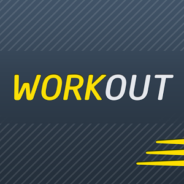

Swole-On-The-Go
Frontend Capstone Project: A workout application which allows
users to pick, save, and personalize exercises. Swole-On-The-Go gives users a solid foundation to achieve their goals in
an easy use format. I learned the in's and out's of AngularJS and FIrebase for this app. AngularJS is an amazing framework
that afforded me the opportunity to be innovative. Working with Firebase allowed me to really grasp authentication. Swole On The Go
The Ultimate ReadMe
Backend Capstone Project: Interactive application which allows users to pick
a myriad of Bible versus in different translation. The Written Word includes a built-in journal for saving commentary or
a devotional tied to a particular Bible verse. The Ultimate ReadMe Server The Ultimate ReadMe AngularJS
Ok Candidate
Group Project: Presents voters with candidates based on varying questions
designed to pair each voter with their perfect candidate. Our goal is to introduce a functioning API which grabs candidates
information based on locale and office. This project introduced me to Docker a neat and rewarding experience into the word
of wrappers and what they can do. OK Candidate